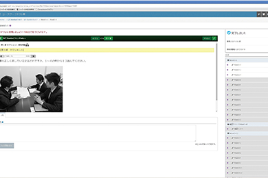

從教材與教學法層面來看
獨創的教學法或運用數位科技的教學工具，讓日語學習有了不一樣的面貌。
新宿日本語學校
江副式教學法 將繁瑣的日語學習視覺化
由新宿日本語學校的校長所開發的「江副式教學法」，只需要用簡單的圖表（以卡片的型式展現）就能夠說明像是「父は帰った時にテレビを見る」與「父が帰った時にテレビを見る」這兩個例句的不同之處。
日語沒有固定的句型與順序，助詞換一下、順序調動一下，意思可能截然不同，也可能根本沒有改變。對外國人學習者來說，這些都是很難適應的地方。江副校長將日本的助詞、副詞進行排列，最後整理出了1080種組合，歸納為兩列，以圖表的方式協助學生理解並記憶用法，也因此，在新宿日本語學校並不需要刻意教授句型，有視覺化的江副式教學法，學生只要讓影像記憶確實留在了腦中，就可以流暢並正確的學會日語。對於初學者來說，能夠以直覺的方式記憶文法；而對於已經有些程度，但是文法始終一團混亂的學習者來說，視覺化的學習法將可有助於釐清自己在文法上的弱點。
草苑インターカルト日本語學校
e-learning「スーパー日本語」 靈活運用數位時代的行動裝置
由草苑インターカルト日本語學校管理維護的「スーパー日本語」，是集結了學校教師37年日語教育的經驗，獨立開發出來的線上學習系統，以JLPT（日本語能力試驗）、BJT（商務日語能力考試）等考試內容、以及企業講座、日語教師養成講座等項目為主要的教學內容。由於是線上教學系統，不受地域、距離的限制。
各學習者可以根據自己的狀況來設定課程進度，並透過題庫來掌握個人的學習弱點以作為改善之據，且針對各練習問題的解答，都備有清晰易懂的說明文，方便學習者熟練答題技巧、速度、及檢視個人的吸收程度；系統頁面會保留過往的學習紀錄，學習者可隨時檢閱，清楚掌握自己的學習成效。此外，スーパー日本語不只有PC版本，亦可使用智慧型手機登入系統，讀取影像、音訊或圖像等多媒體教材，加上每個單元都不是太長，學習者可以利用零碎時間完成，大大地提高學習的機動性。
